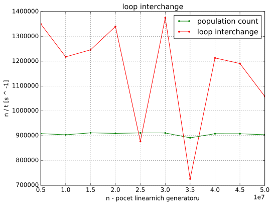
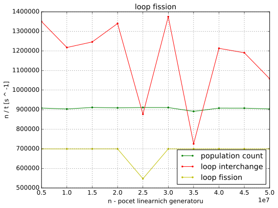
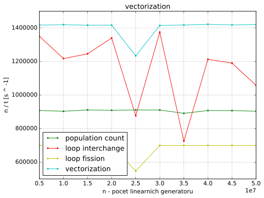
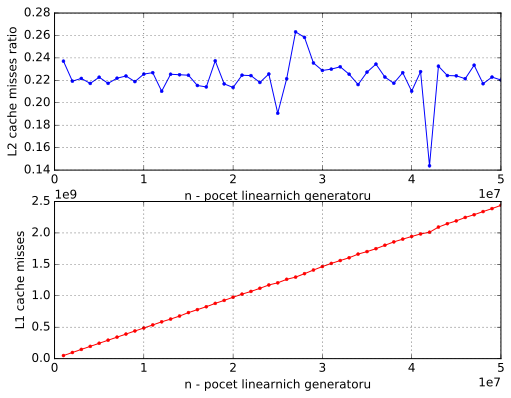

Mějme několik G daných
lineárních generátorů, každý z nich je dán parametry a, b, n. Generátor
vypočítává posloupnost x[i] = (a * x[i - 1] + b) mod 2 ^ n, kde a a b
jsou kladná lichá čísla, 10 < n < 32 a x[0] = 0. Počet členů této
posloupnosti je k (pro všechny generátory stejné). Úkolem je pro dané
konstanty c, d, e (pro všechny generátory stejné), najít:
x[i] v intervalu [c, d]x[i] a parametrem eSekvenční algoritmus se skládá že dvou for cyklů. Vnější cyklus iteruje
přes všechny lineární generátory G. G jsou uloženy ve
dvourozměrném poli. V každém řádku je trojice uint32_t čísel a, b a
n.
/* for each linear generator */
for (size_t i = 0; i < num; ++i) {
a = linear_generators[i][0];
b = linear_generators[i][1];
n = linear_generators[i][2];
x = 0;
count = 0;
min = UINT32_MAX;
max = 0;
Vnitřní cyklus počítá a zkoumá jednotlivé členy posloupnosti x[k]
lineárního generátoru.
for (size_t j = 0; j < k; ++j) {
/* compute next value */
x = lin_gen(a, x, b, n);
/* check if x is in interval */
if (is_in_interval(x, c, d))
++count;
/* compute hamming distance */
dist = hamming_distance(x, e);
/* check minimal hamming distance */
if (min > dist)
min = dist;
/* check maximal hamming distance */
if (max < dist)
max = dist;
}
/* use computed values so compiler does not exclude them */
fprintf(stderr, "%" PRIu32 "%" PRIu32 "%" PRIu32, count, min, max);
}
lin_gen() počítá následující člen posloupnosti. Pro umocnění
2 ^ n používám operaci bitový posun.
uint32_t lin_gen(uint32_t a, uint32_t x, uint32_t b, uint32_t n) {
/* don't care about overflow */
return (a * x + b) % (2 << (n - 1));
}
is_in_interval() provede dvě porovnání a vrátí true
pokud je x v zadaném intervalu jinak false.
bool is_in_interval(uint32_t x, uint32_t start, uint32_t end) {
return start <= x && x <= end;
}
hamming_distance() implementuje algoritmus pro získání
Hammingovy vzdálenosti z bitového or (^) proměnných x a e
postupným odebíráním bitů ve while cyklu. Tato implementace je datově
závislá. Přesto budu generovat data náhodně. Po optimalizacích bude
tato závislost odstraněna.
uint32_t hamming_distance(uint32_t x, uint32_t y) {
uint32_t distance = 0;
uint32_t xor_val = x ^ y;
while (xor_val) { /* count the number of bits set */
++distance; /* a bit is set increment the counter */
xor_val &= xor_val - 1; /* remove the counted bit */
}
return distance;
}
Pro kompilaci programu používám kompilátor GCC. Základní kompilace používá přepínače:
g++ -std=c++11 -march=ivybridge -O3 ...
-march=ivybridge zajistí kompilování kódu pro výpočetní svazky Intel Xeon
2620 v2 @ 2.1Ghz. Nastavení jsem zjistil příkazem:
gcc -march=native -Q --help=target | grep march
-march= ivybridge
Doba výpočtu záleží na k a počtu linearních generátorů. Při zvětšování k
nedochází k zvyšování potřebné paměti. Tedy není ovlivněno využití cache
paměti. Naopak zvyšování počtu lineárních generátorů má vliv na cache paměti.
Měřím s konstatním k = 100 a měnícím se počtem lineárních generátorů n.
V následující části popíšu optimalizace programu a analyzuji jejich dopad na výkonost.
Vložením kódu funkcí nezískám žádné zrychlení, protože -O3
nastavení kompilátorů provede inlining automaticky.
Kód pro výpočet Hammingovy vzdálenosti je neefektvní, netrvá konstatní dobu. Efektivnější implementace je pomoci population count:
dist = x ^ e;
dist = dist - ((dist >> 1) & 0x55555555);
dist = (dist & 0x33333333) + ((dist >> 2) & 0x33333333);
dist = (((dist + (dist >> 4)) & 0x0F0F0F0F) * 0x01010101) >> 24;
Tento algoritmus vypočítá Hammingovu vzdálenost 32 bitového integeru
(uint32_t) v konstantním čase. Program se zrychlí v průměru čtryřikrát.

Program nevyužívá vektorových instrukcí. Podporu těch instrukcí
při kompilaci zapneme přepínačem -mavx.
V generování vektorových instrukcí brání kompilátorů datová závislost x na
předchozí iteraci:
x = ((a * x + b) % (2 << (n - 1)));
Transformace loop interchange odstraní tuto závislost. Vnější cyklus bude
iterovat přes členy posloupnosti x[i] a vnitřní cyklus přes všechny
lineární generátory.
Výsledný kód viz níže. Parametry linernich generátorů ukládám v jednorozměrných polích.
for (size_t i = 0; i < k; ++i) {
/* for each linear generator */
for (size_t j = 0; j < num; ++j) {
/* compute next value */
x[j] = ((a[j] * x[j] + b[j]) % (2 << (n[j] - 1)));
/* check if x is in interval */
if (c <= x[j] && x[j] <= d)
count[j] += 1;
/* compute hamming distance */
dist = x[j] ^ e;
dist = dist - ((dist >> 1) & 0x55555555);
dist = (dist & 0x33333333) + ((dist >> 2) & 0x33333333);
dist = (((dist + (dist >> 4)) & 0x0F0F0F0F) * 0x01010101) >> 24;
/* check minimal hamming distance */
if (min[j] > dist)
min[j] = dist;
/* check maximal hamming distance */
if (max[j] < dist)
max[j] = dist;
}
}
Bohužel se zvýší paměťová náročnost programu a tento kód není vektorizovaný. Přesto loop interchange pro některé instance problému výpočet zrychlí.

Výpis přepínače -fopt-info-vec-all GCC:
not vectorized: control flow in loop.
if podmínky brání vektorizaci. Místo nich použiji ternární neboli min a
max operátory.
count[j] += (c <= x[j] && x[j] <= d) ? 1 : 0;
min[j] = (min[j] < dist) ? min[j] : dist;
max[j] = (max[j] > dist) ? max[j] : dist;
Nyní kompilátor hlásí problém s aliasingem:
number of versioning for alias run-time tests exceeds 10
Můj program přistupuje ke každému poli právě jedním ukazatelem. Aliasing
vyloučím přidáním klíčového slova __restrict__ k pointerům. Pro
snadnější implementaci vytvořím pro výpočet vlastní funkci opt_computation()
s následující definici:
void opt_computation(
uint32_t num,
uint32_t k,
uint32_t c,
uint32_t d,
uint32_t e,
uint32_t *__restrict__ a,
uint32_t *__restrict__ b,
uint32_t *__restrict__ n,
uint32_t *__restrict__ x,
uint32_t *__restrict__ min,
uint32_t *__restrict__ max,
uint32_t *__restrict__ count
);
Kompilátor stále nemůže program vektorizovat kvůli nepodporované operaci.
not vectorized: relevant stmt not supported: _30 = 2 << _29;
V kódu se zbytečně dokola počítá hodnota 2 ^ n, která se v průběhu výpočtu
nemění. Pomoci transformace loop fision ji vypočítám před hlavními
for cykly.
for (size_t j = 0; j < num; ++j)
n[j] = 2 << (n[j] - 1);
for (size_t i = 0; i < k; ++i) {
for (size_t j = 0; j < num; ++j) {
x[j] = (a[j] * x[j] + b[j]) % n[j];
Tato technika zhorší výkonnost. Zřejmu kvůli většímu počtu přístupů do paměti.

AVX nepodporuje ani modulo operátor:
not vectorized: relevant stmt not supported: _40 = _37 % _39;
Modulo nahradím násobením inverzí čísla. Pole n převedu z datového typu
uint32_t na float a upravím prováděné operace.
for (size_t j = 0; j < num; ++j)
n[j] = 1.f / std::exp2(n[j]);
for (size_t i = 0; i < k; ++i) {
for (size_t j = 0; j < num; ++j) {
x[j] = a[j] * x[j] + b[j];
x[j] -= ((uint32_t)(x[j] * n[j])) * n[j];
Konečné kompilátor vnitřní cyklus vektorizuje:
loop vectorized
Podle kompilátorů je velikost použitého vektoru 4. Také v asembleru jsou
použity xmm registry a ne ymm registry. To znamená, že jedna operace se
provádí se čtyřmi 32 bitovými integery (dohromady 128 bitů a proto pracuji s 32
bitovým integerem). AVX má registry
256 bitové, ale pro celočíselné operace podporuje pouze 128 bitové operace.
Vektorizovaný program je nejvýkonnější že všech, přestože se zvýšil počet operací ve zdrojovém kódu.

-ffast-mathDále optimalizuji zarovnání polí v paměti. Kompilátor vedle hlášky o vektorizaci zobrazuje:
loop peeled for vectorization to enhance alignment
Pole alokuji 32 bajtově zarovnané podle doporučení v
Introduction to Intel AVX.
Použiji funkci aligned_alloc() a kompilátoru předám tuto informaci funkcí
__builtin_assume_aligned(). Vzorový kód pro alokaci pole a:
*a = (uint32_t *)aligned_alloc(32, num * sizeof(uint32_t));
Ve funkci opt_computation():
a = (uint32_t *)__builtin_assume_aligned(a, 32);
Program provádí některé operace s čísli v plovoucí řádově čárce. Operace s nimi
mužů zrychlit přepínačem -ffast-math.

GCC podporuje možnost vygenerovaní profilovacích dat a jejich použití pro optimalizaci generování kódu.
Profilovací data jsem vygeneroval přepínačem -fprofile-generate na
50000000 lineárních generátorech. Program kompilovány s -fprofile-use
(data se použijí při kompilaci) bohužel zhorší rychlost výpočtu.

Pro měření výpadku cache použiji knihovnu PAPI. Pomoci PAPI mohu na cílové
architektuře měřit datové výpadky L1 cache (PAPI_L1_DCM), datové výpadky
a přístupy L2 cache (PAPI_L2_DCM a PAPI_L2_DCA resp.).
#ifdef PAPI
#include <papi.h>
#define NUM_EVENTS 3
#endif
...
#ifdef PAPI
int Events[NUM_EVENTS] = { PAPI_L1_DCM, PAPI_L2_DCM, PAPI_L2_DCA };
long_long values[NUM_EVENTS];
/* start counting events */
if (PAPI_start_counters(Events, NUM_EVENTS) != PAPI_OK)
return 0;
#endif
opt_computation(num, k, c, d, e, a, b, n, x, min, max, count);
#ifdef PAPI
/* Stop counting events */
if (PAPI_stop_counters(values, NUM_EVENTS) != PAPI_OK)
return 0;
fprintf(stdout, "%lld ", values[0]);
fprintf(stdout, "%lld ", values[1]);
fprintf(stdout, "%lld ", values[2]);
#endif
Při kompilaci je třeba použít přepínače:
-L/usr/lib64-lpapi-DPAPI-I/usr/includeTakto upravený program dosahuje využití cache na grafu dole.

V ideálním případě je potřeba optimalizovat program tak, aby do L1 cache
nahrával správné množství lineárních generátorů a s nimi provedl
k iterací bez L1 výpadku.
Technikou loop tiling mužů tohoto částečně dosáhnout.
/* loop tiling - main */
for (size_t j1 = 0; j1 < num - BF; j1 += BF) {
for (size_t i = 0; i < k; ++i) {
for (size_t j = 0; j < BF; ++j) {
...
}
}
a += BF;
b += BF;
x += BF;
n += BF;
min += BF;
max += BF;
count += BF;
}
/* loop tiling - the rest */
for (size_t i = 0; i < k; ++i) {
for (size_t j = 0; j < num % BF; ++j) {
...
}
}
Do L1 cache paměti by měl program nahrávat správný počet lineárních generátorů. S nimi provést výpočty a na konci dopočítat zbytek který se také do L1 cache paměti vejde.
Použití pointerove aritmetiky zaručí, že vnitřní cykly mohou iterovat od 0. To umožní auto-vektorizaci obou nejvnitřnějších cyklu.
Problém je určit hodnotu BF. Nepodařilo se mi zjistit velikost cache paměti
naší architekturi. Předpokládám velikost 512 řádek a stupeň asociativity
2 (jak je uvedeno v přednášce). Můj program použivá 7 polí, které bude číst po
blocích. To znamená že může nahrát 512 * 2 = 1024 bloku. 1024 / 7 =
146.2857 je kandidát pro BF. Hodnota snížím na 144, aby byla dělitelná 4
(výhodné pro vektorizaci).
Měřením se ukázalo že nejvýhodnější je BF = 72 (#define BF 72 v kódu):

Správné využití cache paměti opravdu program zrychlí.

Při technice loop unrolling s faktorem rozbalení 2 kompilátor hlásí:
not vectorized: complicated access pattern.
Bez vektorizace by byl program neefektivní, a proto tuto techniku nepoužiji.